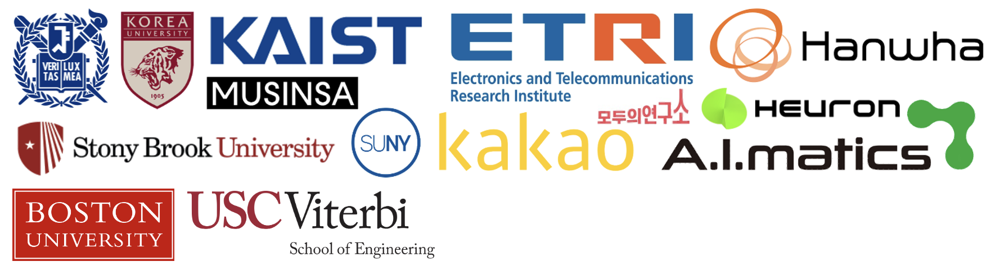

OpenNN
Open Neural Network Research Lab
Supported by MODULABS and Brian Impact Foundation
Open Neural Network Research Lab (OpenNN) is
an open research center where deep learning researchers
from various companies and labs gather to research next-generation neural networks.
Current Lab director is Vincent-Daniel Yun from USC. If you have any question, please contact [juyoung dot yun @ usc dot com].
Our current research interests are:
- Low-Cost LLM Training & Inference
- Neural Network Optimization and Generalization Improvement
- Novel Architectures of Neural Network
- Analysis of Legal Issue for Deep Learning Applications
10 researchers from 10 institutions collaborated on artificial intelligence research,
successfully completing the inaugural program. Further information regarding recruitment for the second cohort will be announced in the future.
See Our team members [Link] from various institutes
